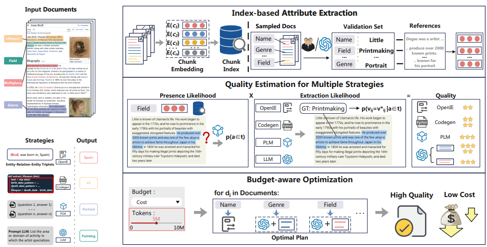
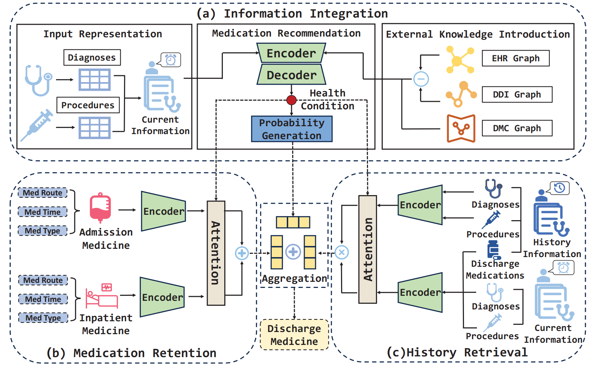
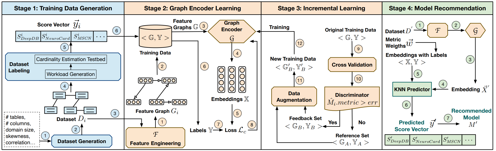
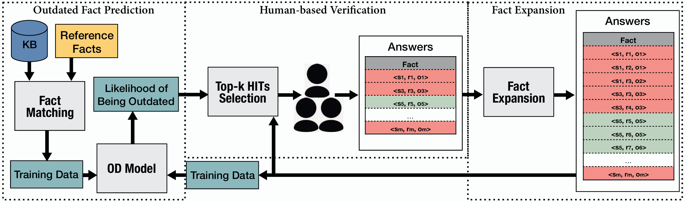

About
Experiences
Publications ( / )
QUEST: Query Optimization in Unstructured Document Analysis
VLDB 2025
OIE: An Interpretable System for Outlier Explanation and Summarization
VLDB 2025

Doctopus: A System for Budget-aware Structural Data Extraction from Unstructured Documents
SIGMOD 2025
Two birds with one stone: Efficient deep learning over mislabeled data through subset selection
SIGMOD 2025

Not All Documents Are What You Need for Extracting Instruction Tuning Data
Arxiv 2025
Cost-effective Missing Value Imputation for Data-effective Machine Learning
TODS 2025
Federated Data Analytics with Differentially Private Density Estimation Model
ICDE 2025

Lead: Iterative data selection for efficient llm instruction tuning
Arxiv 2025
Handling Label Noise via Instance-Level Difficulty Modeling and Dynamic Optimization
Arxiv 2025
Harnessing diversity for important data selection in pretraining large language models
Arxiv 2024
LakeCompass: An End-to-End System for Data Maintenance, Search and Analysis in Data Lakes
VLDB 2024
IDE: A system for iterative mislabel detection
SIGMOD 2024
The dawn of natural language to sql: Are we fully ready?
VLDB 2024
Applications and challenges for large language models: From data management perspective
ICDE 2024

Representation learning for entity alignment in knowledge graph: A design space exploration
ICDE 2024
Mitigating data scarcity in supervised machine learning through reinforcement learning guided data generation
ICDE 2024

Dmrnet: Effective network for accurate discharge medication recommendation
ICDE 2024
Separation is for better reunion: data lake storage at Huawei
ICDE 2024
Cost-effective in-context learning for entity resolution: A design space exploration
ICDE 2024
Misdetect: Iterative mislabel detection using early loss
VLDB 2024
Lakebench: A benchmark for discovering joinable and unionable tables in data lakes
VLDB 2024

PACE: Poisoning attacks on learned cardinality estimation
SIGMOD 2024
Cardinality estimation using normalizing flow
VLDB 2024
A survey of multi-dimensional indexes: past and future trends
TKDE 2024
Efficient coreset selection with cluster-based methods
KDD 2023
Goodcore: Data-effective and data-efficient machine learning through coreset selection over incomplete data
SIGMOD 2023
Demystifying artificial intelligence for data preparation
SIGMOD 2023
Learned data-aware image representations of line charts for similarity search
SIGMOD 2023
Haipipe: Combining human-generated and machine-generated pipelines for data preparation
SIGMOD 2023
A Topic-Aware Data Generation Framework for Math Word Problems
DASFAA 2023

Autoce: An accurate and efficient model advisor for learned cardinality estimation
ICDE 2023
HOFD: An outdated fact detector for knowledge bases
TKDE 2023
Database meets AI: A survey
TKDE 2023
Dynamic materialized view management using graph neural network
ICDE 2023
Cost-based or learning-based? A hybrid query optimizer for query plan selection
VLDB 2022
Coresets over multiple tables for feature-rich and data-efficient machine learning
VLDB 2022
DADER: hands-off entity resolution with domain adaptation
VLDB 2022
Interactively discovering and ranking desired tuples by data exploration
VLDB 2022
Learnedsqlgen: Constraint-aware sql generation using reinforcement learning
SIGMOD 2022
Domain adaptation for deep entity resolution
SIGMOD 2022
Rw-tree: A learned workload-aware framework for r-tree construction
ICDE 2022
Feature augmentation with reinforcement learning
ICDE 2022
Synthesizing privacy preserving entity resolution datasets
ICDE 2022
RNE: computing shortest paths using road network embedding
VLDB 2022
Learned Query Optimizer: At the Forefront of AI-Driven Databases
EDBT 2022
Selective data acquisition in the wild for model charging
VLDB 2022
Data management for machine learning: A survey
TKDE 2022
AlphaQO: Robust Learned Query Optimizer
IJSI 2022
Natural language to visualization by neural machine translation
TVCG 2021
FACE: A normalizing flow based cardinality estimator
VLDB 2021
A learned query rewrite system using monte carlo tree search
VLDB 2021
Automatic data acquisition for deep learning
VLDB 2021
Synthesizing natural language to visualization (NL2VIS) benchmarks from NL2SQL benchmarks
SIGMOD 2021
Ranking desired tuples by database exploration
ICDE 2021
Empowering natural language to visualization neural translation using synthesized benchmarks
IEEE VIS 2021
A tree-based indexing approach for diverse textual similarity search
IEEE Access 2020
Visclean: Interactive cleaning for progressive visualization
VLDB 2020
Interactively discovering and ranking desired tuples without writing sql queries
SIGMOD 2020
Human-in-the-loop outlier detection
SIGMOD 2020

Human-in-the-loop Techniques in Machine Learning
TKDE 2020
Database meets artificial intelligence: A survey
TKDE 2020
Crowdsourcing-based data extraction from visualization charts
ICDE 2020

Outdated fact detection in knowledge bases
ICDE 2020
Reinforcement learning with tree-lstm for join order selection
ICDE 2020
Interactive cleaning for progressive visualization through composite questions
ICDE 2020
Steerable self-driving data visualization
TKDE 2020
Crowdchart: Crowdsourced data extraction from visualization charts
TKDE 2020
Manually detecting errors for data cleaning using adaptive crowdsourcing strategies
EDBT 2020
Towards automatic mathematical exercise solving
DSE 2019
AnalyticDB: real-time OLAP database system at Alibaba cloud
VLDB 2019
Crowdsourcing database systems: Overview and challenges
ICDE 2019
A partial-order-based framework for cost-effective crowdsourced entity resolution
VLDB 2018
CDB: A crowd-powered database system
VLDB 2018
Crowd-powered data mining
Arxiv 2018
Incentive-based entity collection using crowdsourcing
ICDE 2018
CDB: optimizing queries with crowd-based selections and joins
SIGMOD 2017
Cost-effective crowdsourced entity resolution: A partial-order approach
SIGMOD 2016
Natural Language to SQL: State of the Art and Open Problems
VLDB
Retrieval Augmented Imputation Using Data Lake Tables
A technical report on dynamic materialized view management using graph neural network
ICDE